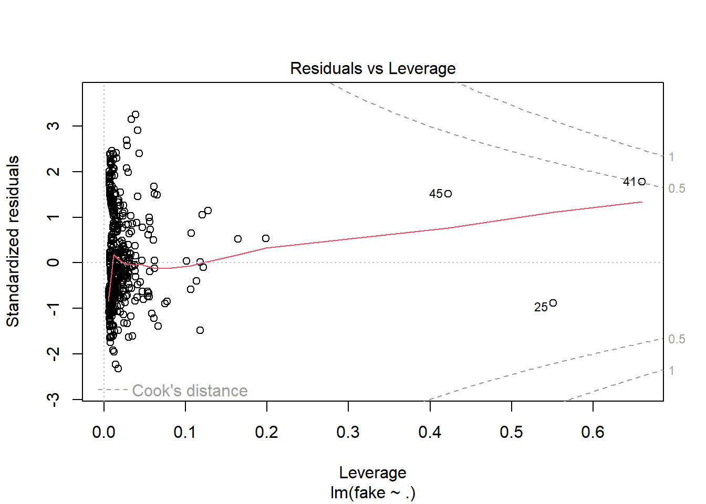
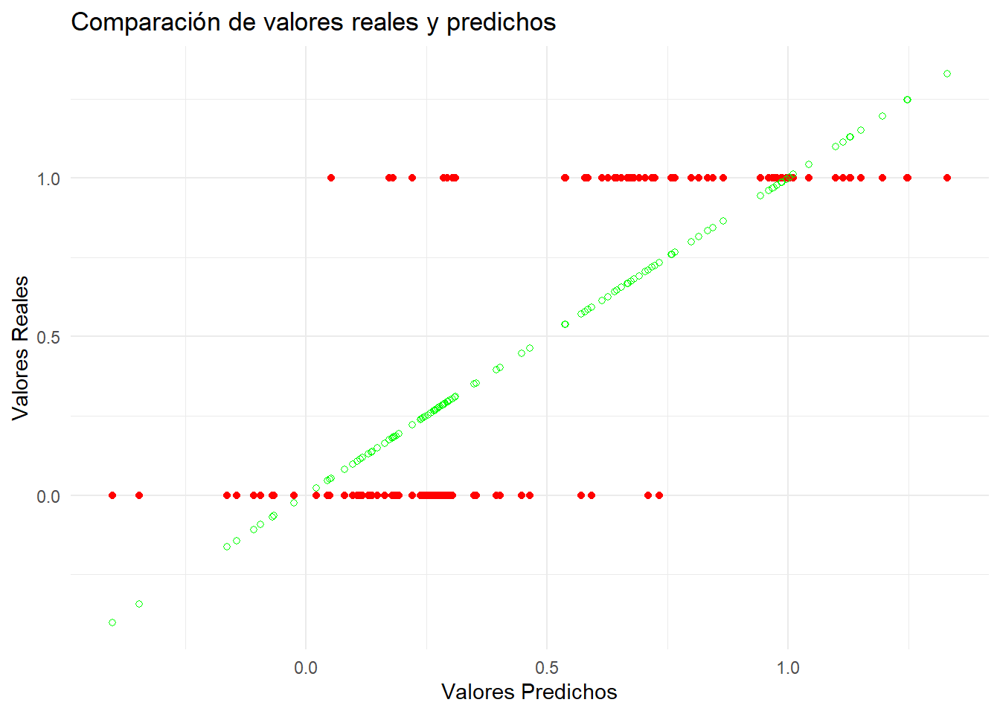
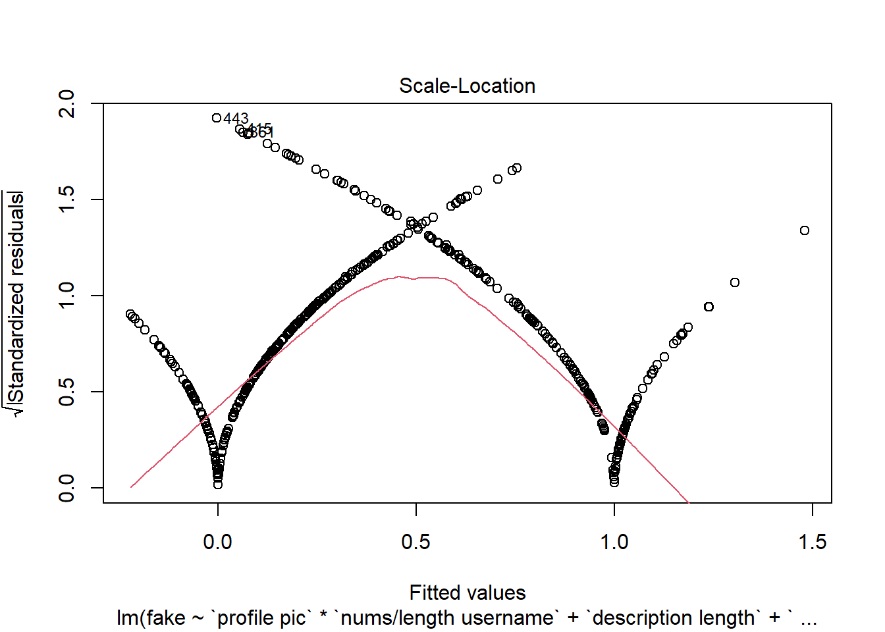
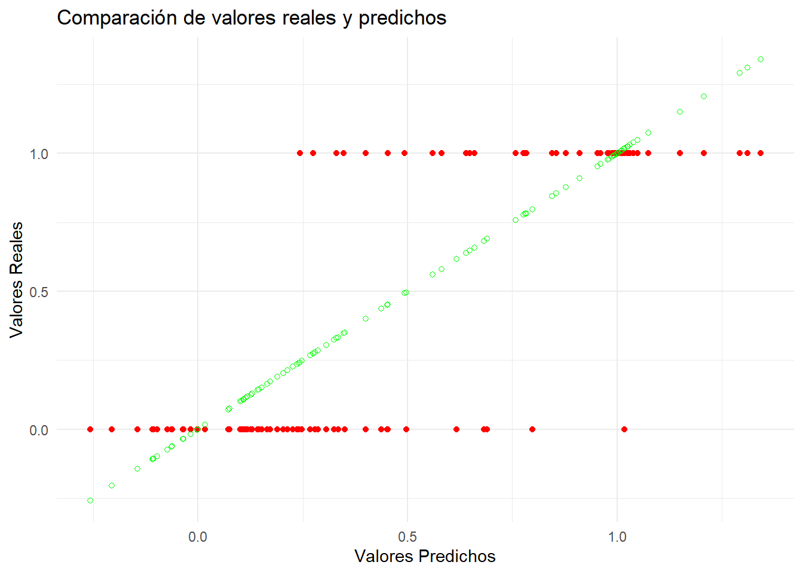
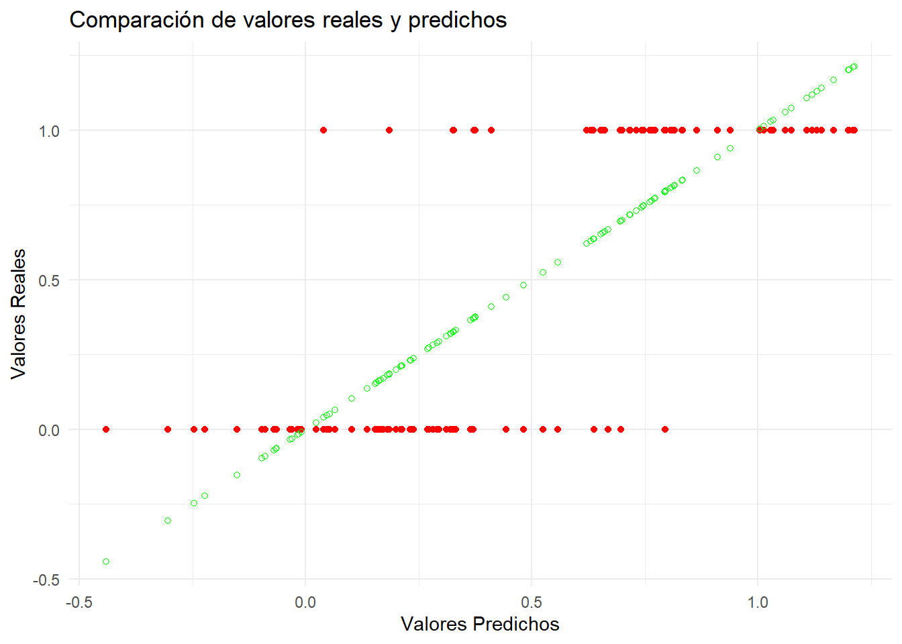
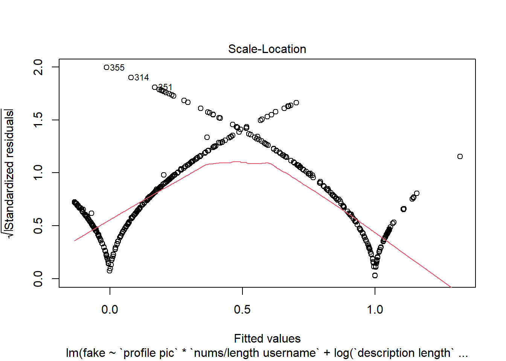

La regresión es una técnica estadística y de machine learning utilizada para modelar y analizar relaciones entre variables. Su objetivo principal es entender cómo cambia una variable dependiente en función de una o más variables independientes. La regresión puede ser utilizada tanto para predecir valores futuros como para entender relaciones subyacentes en los datos.
En el contexto de la detección de cuentas falsas de Instagram, la regresión es una herramienta muy útil. Entrenamos y evaluamos el modelo con conjuntos de datos de entrenamiento y prueba, utilizando métricas para asegurar su efectividad. Gracias a que tenemos dos DataSets, train y test, podemos probar nuestro modelo con datos nuevos. Finalmente, interpretamos los resultados para identificar las variables más influyentes y ajustamos el modelo para mejorar su precisión, intentando crear una herramienta fiable de detección de cuentas falsas.
Ahora vamos a comenzar con
library(readr) library(dplyr)
Attaching package: 'dplyr'
The following objects are masked from 'package:stats':
filter, lag
The following objects are masked from 'package:base':
intersect, setdiff, setequal, union
── Column specification ────────────────────────────────────────────────────────
Delimiter: ","
dbl (12): profile pic, nums/length username, fullname words, nums/length ful...
ℹ Use `spec()` to retrieve the full column specification for this data.
ℹ Specify the column types or set `show_col_types = FALSE` to quiet this message.
datosTest <-read_csv("Data/test.csv")
Rows: 120 Columns: 12
── Column specification ────────────────────────────────────────────────────────
Delimiter: ","
dbl (12): profile pic, nums/length username, fullname words, nums/length ful...
ℹ Use `spec()` to retrieve the full column specification for this data.
ℹ Specify the column types or set `show_col_types = FALSE` to quiet this message.
Antes de intentar modelo de regresión, se debe explorar cuales son las correlaciones entre las variables numéricas.
Vamos a ordenar las correlaciones de mayor a menor y destacar las más significativas:
description length y nums/length username: -0.32117027
#followers y #posts: 0.32138548
description length y fullname words: 0.272522165
description length y #follows: 0.226561422
nums/length username y fullname words: -0.22547213
nums/length username y #follows: -0.17241327
fullname words y description length: 0.272522165
fullname words y nums/length username: -0.22547213
Estos valores nos indican las variables que tienen más relación entre sí. Es decir, las correlaciones altas señalan que cuando una variable cambia, la otra tiende a cambiar en la misma dirección o en dirección opuesta.
Vamos a emplear la librería psych para visualizar estas correlaciones de manera más intuitiva.
La parte superior de la visualización corresponde a la matriz de correlación. La diagonal muestra histogramas y además añade óvalos indicando la fuerza de correlación. Cuanto más se estire la elipse, más fuerte será la correlación. Cuanto más redondo el óvalo, más débil la correlación.
library(psych)
Warning: package 'psych' was built under R version 4.3.3
Attaching package: 'psych'
The following objects are masked from 'package:ggplot2':
%+%, alpha
Ciertamente podemos ver que donde hay mayor elipse es en description length y nums/length username y en followers y #posts. Por lo tanto, las tendremos mas presentes para nuestro futuro modelo de regresión.
5.1 Construcción del modelo
Vamos a construir un primer modelo, donde vamos a enfrentar el atributo fake a todas las demás variables. Aunque seguramente no sea el mejor modelo, nos dará una primera idea de cómo podemos ir mejorándolo.
modelo1 <-lm(fake ~., data = datos)summary(modelo1)
Vemos que obtenemos un modelo que no tiene un mal valor de R-squared, pero sigue siendo bajo. Además, ya podemos visualizar variables que se podrían eliminar. Esto se deduce de ver que su p-value es alto, como por ejemplo en el atributo private. Además de tener un residuo alto.
Vamos a ver gráficas sobre el modelo, donde podemos ver los residuos intuitivamente:
plot(modelo1)

Podemos utilizar la gráfica de Residuals vs Leverage para ver la influencia de los puntos en nuestro modelo. Con esta información, observamos que en general no hay muchos puntos que afecten al modelo, los llamados “outliers”; solo podemos distinguir el 45, 25 y 41, los cuales pueden ser eliminados para mejorar el modelo.
Podemos visualizar la distribución de los residuos para evaluar si estos se comportan de manera aproximadamente normal, un supuesto común en muchos modelos estadísticos.
plot(density(resid(modelo1)))
La forma de la gráfica sugiere que los residuos del modelo no se distribuyen de forma normal y que podría haber problemas con el modelo.
Por último, vamos a ver el modelo prediciendo gráficamente. Podemos utilizar los datos de prueba que nos proporciona nuestro dataset.
modelo1_predic <-predict(modelo1, newdata = datosTest)datosTest1 <- datosTest %>%mutate(pred = modelo1_predic)# Rojos -> Reales, verdes -> Predichosggplot(datosTest1, aes(x = pred, y = fake)) +geom_point(color ="red") +geom_point(aes(x = pred, y = pred), color ="green", shape =1) +labs(title ="Comparación de valores reales y predichos",x ="Valores Predichos",y ="Valores Reales") +theme_minimal()

Vemos que ciertamente, al usar una regresión “lineal”, los valores se disponen en una linea recta, la que corresponde a la ecuación obtenida gracias a lm.
Una vez visto que nuestro modelo inicial, con todas las variables, no es del todo bueno, vamos a eliminar variables con p-values altos, outliers, … e intentar mejorarlo.
5.2 Mejorando el modelo
5.2.1 Eliminando Outliers
Vamos a eliminar los valores que están muy separados y que pueden afectar al modelo.
datos <- datos[-c(45,25,41),]datos <- datos[-c(440,412,396),]datos <- datos[-c(351,364,174),]datos <- datos[-c(140,446,449),]
Hay que hacerlo con moderación ya que si eliminamos muchos valores que realmente no son “outliers” estamos obteniendo mejores modelos pero que realmente no son así.
Vemos, que nuestro modelo ha mejorado un poco y tenemos menos residuos, que es lo que estamos buscando.
plot(modelo3)

plot(density(resid(modelo3)))

Seguimos teniendo una distribución de residuos asimétrica y no normal.
Vamos a visualizar como predice este nuevo modelo:
modelo3_predic <-predict(modelo3, newdata = datosTest)datosTest3 <- datosTest %>%mutate(pred = modelo3_predic)# Rojos -> Reales, verdes -> Predichosggplot(datosTest3, aes(x = pred, y = fake)) +geom_point(color ="red") +geom_point(aes(x = pred, y = pred), color ="green", shape =1) +labs(title ="Comparación de valores reales y predichos",x ="Valores Predichos",y ="Valores Reales") +theme_minimal()

Sin embargo, este gráfico, al ser los valores entre 0 y 1 es un poco confuso, vamos a ver el porcentaje de acierto mejor:
datosTest3 <- datosTest3 %>%mutate(pred =ifelse(modelo3_predic <0.5, 0, 1))# Calcular el porcentaje de aciertosaccuracy <-mean(datosTest3$pred == datosTest3$fake) *100accuracy
[1] 87.5
Vemos que ha acertado un 87.5% de las veces, un dato bastante bueno.
5.3.1 Exportar el modelo
Para poder utilizar el modelo en futuras aplicaciones, podemos guardarlo de la forma:
save(modelo3, file ="modelo3.rds")
5.4 Interacciones entre variables
Al incluir términos de interacción en el modelo de regresión, permitimos que el efecto de una variable sobre la otra varíe según los niveles de otras variables incluidas en la interacción.
Esto puede ser importante para capturar relaciones más complejas entre las variables.
# Guardar el modelo en un archivosaveRDS(modelo_interact, file ="modelo_interact.rds")
Este modelo vemos que ha mejorado frente a todos loa anteriores, por lo que tenemos que tenerlo en cuenta para nuestro modelo final.
5.5 Ingeniería de variables
La ingeniería de variables implica crear nuevas variables o transformar las existentes para mejorar el rendimiento de un modelo predictivo. Esto incluye crear características nuevas, transformar las existentes, entre otras técnicas.
Vamos a probarlo en nuestro modelo.
modelo_nuevasVar <-lm(fake ~`profile pic`+`nums/length username`+log(`description length`+1) +`name==username`+log(`#posts`+1), data = datos)summary(modelo_nuevasVar)
# Guardar el modelo en un archivosaveRDS(modelo_nuevasVar, file ="modelo_nuevasVar.rds")
De nuevo, este modelo ha sido mejor que todos los anteriores simplemente añadiendo el logaritmo de unas variables.
5.6 Modelo final
Vamos a combinar todos los métodos anteriores para encontrar el mejor modelo posible. Aplicaremos tanto variables no lineales como ingeniería de variables e interacción entre variables.
Vemos que el mejor modelo que hemos conseguido obtener ha mejorado bastante respecto al primer modelo obtenido, teniendo un mejor R cuadrado y menos residuos. Vamos a ver las demás métricas utilizadas anteriormente.
plot(modelo_final)

Vamos a generar predicciones con el dataSet de test.
Por último, vemos que obtenemos un buen porcentaje de acierto con nuestro dataSet de prueba,
5.7 Otros modelos de regresión
Vamos a explorar otros modelos de regresión diferentes al clásico modelo de regeresion lineal que hemos estado trabajando hasta ahora. Puede ser que para nuestra investigación, un modelo diferente al lineal sea mas conveniente y nos pudiera ayudar mas.
5.7.1 Random Forest
Random Forest es un algoritmo de aprendizaje automático que se basa en la idea de crear múltiples árboles de decisión durante el proceso de entrenamiento y luego combinar sus predicciones para obtener una predicción más robusta y precisa.
library(randomForest)
Warning: package 'randomForest' was built under R version 4.3.3
randomForest 4.7-1.1
Type rfNews() to see new features/changes/bug fixes.
Attaching package: 'randomForest'
The following object is masked from 'package:psych':
outlier
The following object is masked from 'package:ggplot2':
margin
The following object is masked from 'package:dplyr':
combine
datosdf <-data.frame(datos)# Crea el modelo de Random Forestmodelo_rf <-randomForest(fake ~ .,ntree=4, data = datosdf)
Warning in randomForest.default(m, y, ...): The response has five or fewer
unique values. Are you sure you want to do regression?
# Resumen del modeloprint(modelo_rf)
Call:
randomForest(formula = fake ~ ., data = datosdf, ntree = 4)
Type of random forest: regression
Number of trees: 4
No. of variables tried at each split: 3
Mean of squared residuals: 0.08285584
% Var explained: 66.86
modeloRF_predic <-predict(modelo_rf, newdata =data.frame(datosTest))modeloRF_predic <- datosTest %>%mutate(pred =ifelse(modeloRF_predic <0.5, 0, 1))# Calcular el porcentaje de aciertosaccuracy <-mean(modeloRF_predic$pred == modeloRF_predic$fake) *100accuracy
[1] 91.66667
5.7.2 Generalized Additive Model
Un GAM es un tipo de modelo estadístico que generaliza los modelos lineales al permitir relaciones no lineales entre las variables predictoras y la variable de respuesta.
En lugar de suponer una relación lineal entre las variables, los GAM permiten que cada variable explicativa tenga una relación suave con la variable de respuesta, modelada a través de funciones suaves.
library(mgcv)
Warning: package 'mgcv' was built under R version 4.3.3
Loading required package: nlme
Warning: package 'nlme' was built under R version 4.3.3
Attaching package: 'nlme'
The following object is masked from 'package:dplyr':
collapse
This is mgcv 1.9-1. For overview type 'help("mgcv-package")'.
modeloGam_predic <-predict(modelo_gam, newdata =data.frame(datosTest))modeloGam_predic <- datosTest %>%mutate(pred =ifelse(modeloGam_predic <0.5, 0, 1))# Calcular el porcentaje de aciertosaccuracy <-mean(modeloGam_predic$pred == modeloGam_predic$fake) *100accuracy
[1] 89.16667
5.8 Conclusiones
Hemos explorado tanto los tradicionales modelos lineales como también nuevos enfoques de regresión. Durante este proceso, hemos descubierto modelos interesantes que muestran un potencial considerable para generar predicciones precisas en contextos del mundo real. Al aplicar estos modelos a conjuntos de datos reales, estamos equipados para abordar problemas complejos y tenemos la herramientas para realizar predicciones certeras sobre datos reales, pudiendo servir de verdadera ayuda en el mundo real.